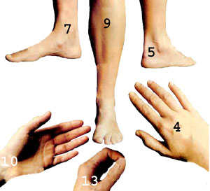

Relieve your aches and pains without the use of often harmful drugs...
Health care can often be a problem for folks who want to move toward a more natural, stress-free, and independent rural lifestyle. If your homestead is deeply buried in the woods, for instance, what do you do when a health crisis occurs? The usual options-rushing many miles to a doctor, clinic, or drugstore . . . keeping a large stash of medicine for who-knows-what emergency . . . or just suffering while your body heals itself-are far from attractive or practical.
Fortunately, there's at least one therapeutic technique that can relieve some kinds of discomfort almost instantly and is said to stimulate the mind and body's own self-healing powers. The method is known as G-Jo (pronounced "JEE-joh").
G-Jo means "first aid" in Chinese, and the technique originated in the Orient thousands of years ago. It's a primary form of finger pressure acupuncture (or acupressure), and-with a little reading and practice-you can learn enough G-Jo to avoid much needless suffering and become more nearly independent of doctors and drugs ... especially if your lifestyle is already a healthful one.
There are two vital rules for using G-Jo. The first is FIND THE RIGHT PRESSURE POINT. The specific spots may be tricky to locate at first, and you must use the tip of your thumb or forefinger-not the pad or fleshy part-to probe the area of the point as deeply as you can ... applying about 20 pounds of finger pressure. Since these areas of pressure are only about the size of a pinhead, you'll have to practice locating them until you become familiar with their feel and position. You'll know when you've found a pressure point, though: It will announce itself with a "loud" twinge of sensitivity, much like that associated with a pinched nerve or a toothache.
The second important rule is STIMULATE THE PRESSURE POINT PROPERLY. Here, again, the secret is deep pressure . Massage the tiny spot with a digging, goading motion ... again, using the tip of the thumb or forefinger. If you have trouble applying enough force with your finger, you can use the blunt end of a felt-tipped marker or something similar. In severe cases, you might have to continue applying pressure for as long as several minutes, but 10 or 15 seconds of treatment is usually enough to unblock the right control point and relieve the problem completely or, at least, substantially ease the symptoms.
Pressure points are usually duplicated bilaterally, so-after you stimulate a spot on one side of your body-you can simply repeat the operation on the opposite side. You'll often find one more tender than the other... and treating one side may relieve a symptom, while stimulating the opposite point may bring the discomfort back . (If that happens, simply reapply pressure to the original side until the symptom disappears again.)
There are several different types of acupressure, but G-Jo is the most basic form. It's designed to be used symptomatically ... that is, only when symptoms manifest themselves, either from sources (such as illness) within the body or as a result of accidental injury.
The goal of G-Jo treatment is, of course, to provide increasingly long periods of relief. However, if you have to goad the points more than four or five times during the day-or for more than several days in a row-it's a good indication that you're using the wrong points and/or that your problem is beyond the scope of G-Jo ... and in such cases you should always seek professional medical help.
Since there are more than 115 pairs of G-Jo points on your body, finding just the right one(s) can be a time-consuming job .. . even if you know where they're all located. On the other hand, there are six broad-acting, easily found points (which you can quickly memorize) that will often stop an acute or emergency symptom in seconds.
Each of the six pairs, which are located on the lower arms and lower legs, can affect large segments of the body. So- while applying pressure to any one pair may not be the best treatment for a specific symptom-it should bring enough relief to make you quite comfortable (and will stimulate your self-healing process at the same time).
As soon as you notice a problem, stimulate whichever one of the following basic pairs of points best controls that area. If your symptom is not relieved satisfactorily, try another pair of points. ( Because they are so broad-acting, any one pair may relieve symptoms usually controlled by another.) Then, when your symptom returns-if it does-simply restimulate the pair of points that best alleviated your discomfort.
When you find the right point of control, several things should happen: The most important, of course, is that your discomfort (such as headache, indigestion, muscle sprain, or any of the more than 250 disorders helped by G-Jo) should be immediately relieved. In addition, there may be a residual easing of tension throughout your whole system, and perhaps a light flush of perspiration across your brow or shoulders.
The primary G-Jo point to control problems of the head and neck is G-Jo No. 13 ... which is located on the top side of the hand between the thumb and forefinger and snuggled deeply in the fleshy webbing as if it didn't want to be disturbed. You'll see why the point is so well protected when you find it, as it'll be quite tender.
To locate this spot, push your right thumb and forefinger together until the fleshy mound appears between them on the top of the hand. Place the tip of your left thumb on top of the mound, then relax your right hand, keeping your left thumb in place. Now, reach beneath the webbing with your left index finger and place it in the right palm, make a pincher, and probe deeply with the tip of your thumb. You should immediately feel the characteristic twinge . . . but, if you don't, just move your thumb tip back toward your wrist, between the two bones (first and second metacarpals) until you find the sensitive spot. (When using this-or any-G-Jo point, it makes no difference which side of the body you begin with ... just stimulate each one identically.)
I've used G-Jo No. 13 numerous times to relieve headaches and other head problems. In fact, it once saved me a visit to the emergency room: In 1974-while I was working on one of the chicken coops at my organic egg farm in southern Florida-a 100-pound steel ladder fell on my face, making a deep slice in the tip of my nose and cutting into my upper gum as well. The pain was intense, and I almost passed out.
However, I grabbed for my left hand's pressure point and goaded it as deeply as I could . . . then I did the same on the other hand and held both points for almost a minute. The pain was immediately eased, and even the bleeding stopped! When the symptoms returned a few minutes later, I simply restimulated both points and got the same relief.
In all, I pressed No. 13 about two dozen times the first day ... a few times less often the second day ... and even less the third. After that I no longer needed the "treatment". I didn't see a doctor, get stitches, or use any drugs or medicine ... yet the wounds healed quickly, cleanly, and with minimal scarring. While I don't recommend such self-treatment to anyone but a master of the G-Jo art, the incident convinced me that-if necessary-I could handle even relatively severe physical injuries ... and it was a major turning point in my life.
The second major pressure point-G-Jo No. 4-can be found approximately two inches (about the width of two thumbs) above the most prominent crease of your wrist on the upper side (lateral aspect) of the forearm ... in line with the middle finger. It's found in a protected hollow (as are many important G-Jo points) between the lower arm bones (the radius and ulna). If you can't generate enough pressure with the tip of your thumb, use the knuckle of your index finger to probe for the point.
G-Jo No. 4 has major control over the hand, arm, and shoulder. Gail, my partner, has also applied it to relieve burns and scalds. And since she suffers from "sugar allergy" (hypoglycemia, or low blood sugar), she employs this point (as well as others) to quickly control any negative emotional and physical effects that occur from accidentally eating the wrong foods. G-Jo No. 4 is also very effective in alleviating the pain of tennis elbow and tension in the neck and shoulders.
G-Jo No. 10 is a pressure spot that's sometimes taught in Western first aid courses as a means to control bleeding, but it has a number of other uses, too. The point is located directly beneath G-Jo No. 4-between the tendons on the underside (inner aspect) of the lower forearm-again, in line with the middle finger and about the width of two thumbs above the most prominent crease of the inner wrist ... in the direction of the elbow.
No. 10 is an important point for treating such diverse symptoms as menstrual cramps, seasickness, or hiccups ... but its primary use is to control asthma and other problems of the chest area.
While each of the three basic pressure points already described may relieve as many as 40 distressed areas, none of them is more potent than G-Jo No. 9. This one is located about three inches (the width of one of your hands) below the bottom edge of the kneecap. There's a ridge of bone (the shinbone, or tibia) along the front of the leg, and the pressure point is just alongside that ridge (laterally, in the direction of the little toe), between the shinbone and the front of the calf (or anterior tibial) muscle.
You'll probably find a long, valleylike depression that runs most of the length of your lower leg, and it's in this depression that the point is found. Though No. 9 is the most difficult of the six basic points to locate, it assuages problems connected with all areas from the stomach downward (the entire lower three-fifths of the body), so it's well worth searching out. It can be used to control both diarrhea and constipation, and-when used in conjunction with G-Jo No. 7 (see below)-the elusive point is a powerful treatment for most any digestive problem.
G-Jo No. 7, fortunately, is as easy to find as No. 9 is difficult to locate. Simply measure the width of one hand-roughly three inches-directly above the bulge of the inner ankle (the medial malleolus). The tiny point lies just behind-and almost touching-the shinbone. It's actually between the shin and the calf (the flexor digitorum longus), but since G-Jo points are located in the skin or flesh-rather than the muscles or bones-they tend to "float" a bit.
Nearly everyone will be able to find this point-which works about like No. 9- without much difficulty. My daughter uses it to ease menstrual distress, and I've found that pressure applied to No. 7 promptly reverses any feeling of nausea and indigestion I might experience after overeating.
G-Jo No. 5, the last of the six major pressure points, is a good spot for lower-back-pain sufferers to memorize. To locate it, simply probe the area behind the bulge of the outer ankle (or lateral malleolus), and just in front of the Achilles tendon. The point is found in the hollow or soft, valleylike area, but may be a little off-center.
Every member of my family has relied on No. 5 to get rid of back pain at one time or another, and my son has used it-along with point No. 13-to help relieve the discomfort of a leg and ankle injury he received when he fell while running last year. In short, the point is excellent for many problems from the waist down, especially those that occur along the back (posterior) part of the body. It's also a good point for midwives-and women who plan to use natural childbirth-to know. Point No. 5-alone, or with No. 13-helps alleviate labor pains, speeds delivery, and reduces trauma ... but it should only be used in cases where labor pains are severe or when the delivery may be difficult.
Since G-Jo is a natural, drugless technique, it's as safe for treating children as it is for adults ... one should simply apply less pressure when goading the points on a child's more sensitive body. My friend Gail, who teaches visually limited preschoolers, uses acupressure regularly to ease many minor playground injuries.
G-Jo is also a valuable first aid technique, especially for use in emergencies. For example, I recently came upon an auto accident and found a woman pinned in her car, apparently suffering from a crushed chest. She was in great pain and nearing a state of shock. With her permission-and her husband's-I stimulated G-Jo points No. 10 and No. 4. The woman's clenched face immediately relaxed, her color brightened, and she said she felt better. About that time the ambulance arrived, so I don't know the final results of her accident ... but I did prove to myself that a knowledge of G-Jo can help any healer follow Buddha's dictate: "First, relieve suffering."
However, while G-Jo is great for both acute and emergency symptoms, it's not so effective for chronic problems ... those which have been a part of the sufferer's life for more than, say, several weeks, or those that seem to reoccur with regularity. Simply stimulating the right control points-even if it does temporarily relieve a symptom-is, obviously, no substitute for healthful living. Disease and discomfort often arise from abuse of the body, and no true cure is possible until those abusive factors (such as overly processed foods, or drugs) are eliminated from one's life.
In short, while G-Jo can be effective in limited or one-time use, it's not recommended as a panacea or a full-time alternative to proper professional help. And there are some people-most notably, pregnant women (especially those beyond the third month) and folks who suffer chronic heart problems (primarily those who use a pacemaker or have had open-heart surgery)-who should shun regular use of acupressure.
G-Jo should also be temporarily avoided under certain other conditions: Except in emergencies, it's best to wait about four hours after taking any drugs, medication, alcohol, or other intoxicants to use G-Jo. And give yourself about half an hour after a hot bath, a full meal, or physical work or exercise ... because the "primal" energy (or the force that makes the heart beat) is too out of balance to respond to G-Jo during those times.
The use of all 115 pressure points, combined with improved diet and attitudes, has helped me-at 40-to be healthier than I've ever been before ... and my health seems to be constantly improving, too! Since I've become competent with G-Jo, I've used medication only once ... I've seen no doctors or other health specialists ... and, most important, I've been virtually free of suffering while my body goes about its job of self-healing. I'm happier, too, than I've ever been, because I have a profound sense of confidence in (and awe of) the body/mind combination's potentials and capabilities.
vIf you're willing to use a little time to practice the technique-and to temper your use of G-Jo with plain old common sense-I believe the method can work for you, too!
EDITOR'S NOTE: You can obtain a free chart of your body's basic six G-Jo points and many of their uses by sending a long (No. 10) self-addressed, stamped envelope to: The G-Jo Institute, P.O. Box 8060, Hollywood, Florida 33042. All 115 G-Jo pressure points, along with their more than 250 uses, are described in The Natural Healer's Acupressure Handbook by Michael Blate (1977, Holt, Rinehart, and Winston) which may be ordered for $4.95 (plus 95 cents shipping and handling) from Mother's Bookshelf, P.O. Box 70, Hender-sonville, North Carolina 28739.
|
 POINT NO. 4?located above the wrist?assuages pain in the arm and hand, head and face, elbow, shoulder, and wrist . . . and should be used to help relieve persistent coughs. POINT NO. 5?behind the bulge of the outer ankle?can help alleviate the discomfort of pains in the back, face, foot, hip, and rectum . . . along with sprains and muscle pulls. POINT NO. 7?above the bulge of the inner ankle?relieves indigestion, flatulence, constipation, and diarrhea . . . plus stomach, leg, foot, and common menstrual difficulties. POINT NO. 9?the most potent point of all?is located three inches below the bottom edge of the kneecap, between the shin-bone and the front of the calf muscle . . . and can be used to ease the discomforts of indigestion, backache, diarrhea, constipation, leg pains, and nagging headaches. POINT NO. 10?which can be used to control bleeding?may also be used for chest pains, menstrual problems, seasickness, hiccups, coughs, and symptoms related to shock. POINT NO. 13?hidden between the thumb and index finger?is good for headaches, neck pains, and toothaches ... as well as problems of the hand, elbow, arm, and foot. |
|
|